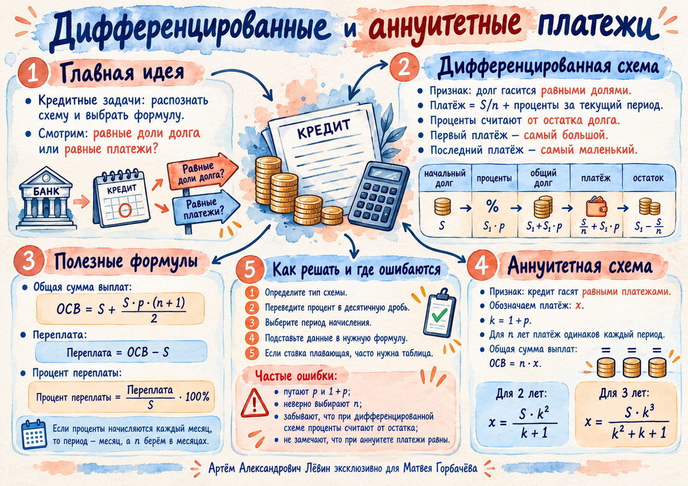

Равные части основного долга
Каждый раз погашается S / n. Платежи при положительной постоянной ставке убывают.
Математика / Экономические задачи / 18 октября 2026
Две схемы погашения кредита. Их легко отличить по одному признаку: остаётся постоянной часть основного долга или весь платёж?
В каждом периоде проценты начисляются на сумму, которую банк ещё не получил обратно.
При полном погашении Bn+1 = 0. Сумма всех платежей обозначается T, переплата W = T − S, процент переплаты q = W / S · 100%.
Каждый раз погашается S / n. Платежи при положительной постоянной ставке убывают.
Каждый раз вносится x. Внутреннее соотношение процентов и погашения долга меняется.
Часть основного долга постоянна, а проценты от периода к периоду становятся меньше.
| Год | Долг в начале | Проценты | Платёж | Остаток |
|---|---|---|---|---|
| 1 | S | Sp | S/4 + Sp | 3S/4 |
| 2 | 3S/4 | 3Sp/4 | S/4 + 3Sp/4 | S/2 |
| 3 | S/2 | Sp/2 | S/4 + Sp/2 | S/4 |
| 4 | S/4 | Sp/4 | S/4 + Sp/4 | 0 |
Кредит 2,5 млн руб. на 4 года под 15% годовых; погашение основного долга равными частями.
Переплата — 0,9375 млн руб. или 37,5%. Первый платёж — 1 млн руб., последний — 0,71875 млн руб.
Числовая шкала показывает полный платёж по каждому году, включая проценты.
Весь платёж неизменен: каждый период вносится одинаковая сумма x.
Для трёх периодов: B2 = Sk − x, затем B3 = Sk² − xk − x. После третьего платежа остаток B4 = Sk³ − x(k² + k + 1) = 0.
Общая сумма выплат T = nx; переплата W = nx − S; процент переплаты q = W / S · 100%.
Кредит 331 000 руб. на 3 года под 10% годовых. Коэффициент k = 1,1, одинаковый платёж 133 100 руб.
| Год | В начале | Проценты | Платёж | Остаток |
|---|---|---|---|---|
| 1 | 331 000 | 33 100 | 133 100 | 231 000 |
| 2 | 231 000 | 23 100 | 133 100 | 121 000 |
| 3 | 121 000 | 12 100 | 133 100 | 0 |
Проверка. За три года уплачено 399 300 руб. Переплата составила 68 300 руб. В последней строке остаток равен нулю.
По условиям тренировочного задания 10 кредит 210 000 руб. на 2 года под 10% обойдётся в 241 500 руб. при погашении равными частями долга и в 242 000 руб. при двух равных платежах.
Разница составляет 500 руб. Важно сравнивать общие выплаты при одинаковых условиях.
Пример ограничения. При p = 0,1 процент переплаты в дифференцированной схеме равен 5(n + 1)%. Если требуется не более 25%, получаем n ≤ 4: допустимы n = 1, 2, 3, 4.

Постер удобно сохранить для повторения перед самостоятельной тренировкой.
Открыть постер ↗Десять заданий по возрастанию сложности. Сначала решите, затем откройте ответы.
Основной долг погашается пятью равными частями, проценты начисляются на остаток. Определите схему, n и p при ставке 12% за период.
Кредит 360 000 руб. на 3 года под 10% годовых; основной долг гасят равными частями. Найдите размер основной части, первого и последнего платежей.
Кредит 600 000 руб. погашают дифференцированными платежами за 4 года под 8% годовых. Найдите общую сумму платежей и переплату.
Кредит 280 000 руб. погашают 14 дифференцированными ежемесячными платежами. Ставка 1% в месяц. Найдите переплату в рублях и процентах.
При погашении кредита 1 000 000 руб. за 5 лет равными частями общая сумма выплат — 1 150 000 руб. Найдите годовую ставку.
Кредит 400 000 руб. погашают четырьмя равными частями долга. Первые два года ставка 10%, следующие два — 15%. Найдите общую сумму платежей и переплату.
Кредит 210 000 руб. погашают двумя равными ежегодными платежами под 10% годовых. Найдите размер платежа и переплату.
Кредит 331 000 руб. погашают тремя равными ежегодными платежами под 10% годовых. Найдите размер платежа и общую сумму выплат.
Два равных ежегодных платежа по 144 000 руб. полностью погасили кредит под 20% годовых. Найдите первоначальную сумму и переплату.
Сравните два способа погасить 210 000 руб. за 2 года под 10% годовых: равными частями долга или двумя равными платежами. Найдите общие выплаты и разницу.
Подробный разбор, таблицы и задания для печати доступны в чек-листе PDF.